C++ Language Basics
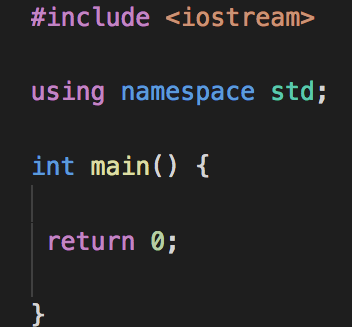
A typical C++ program will look something like this:
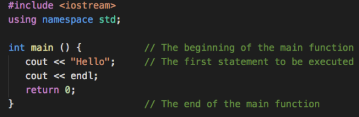
Compiling and running this program looks like this:
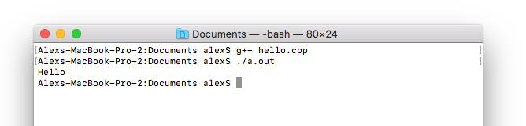
When you run the program, it will start at the beginning of the main function, execute each statement in order until it reaches the return statement at the end of the main function, and then exit (return statements will be explained later).
Each statement ends with a semicolon (;).
C++ is case-sensitive.
Comments
Comments are lines of text that are not execute. Comments are for our eyes only; compilers ignore them.
- Inline comment
Marks the rest of the text on the line as a comment
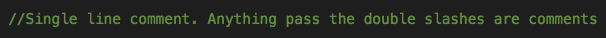 - Multi-line comment
Multi-line comment Marks a block of text as comments
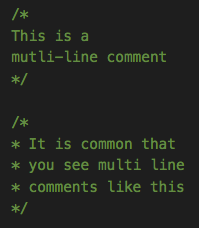
Output
We use cout to print to the console.
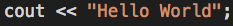
When this statement is executed, whatever is to the right of the << is printed to the console. It may be either a literal or a variable (of any type)
C++ is a case-sensitive language. COUT, Cout, and cout are not the same things.
You can use chaining to print multiple literals and/or variables with a single statement.
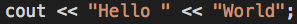
Literals, Data types, and Variables
Both literals and variables have a value and a data type. A literal represents a specific value. A variable has a name which refers to a location in memory, and its value may change.
Data types are what we use to represent data. Keywords are words reserved by the programming language. The keywords below are only data types we will use in this course.
| Data Type | Description | Examples of Literals |
|---|---|---|
| int | Integer (positive or negative) | 5, -3 , 21927303 |
| double | Double-precision floating-point | 3.14, -2.19, .00009 |
| bool | true or false | true, false |
| char | A single character | 'c', '2', '$' |
| string | A sequence of 0 or more characters | "Hello", "", "3.14" |
Some more notes:
- string is surrounded by double quotes, while char is surrounded by single quotes.
- int, double, bool, and variable names are not surrounded by quotes
- "" is an empty string.
- \n is a newline character. It is one of several special characters. If you print the string "1\n2" it will print 1 and 2 on separate lines. You can also use endl to print a newline character (as shown in the first example on the top of this page).
Declaring Variables
Variables store data so that we can process the data. Variables have data types. We must declare (create) variables before we can use them. Variable names:
- Must begin with a letter, can end with a number
- Can only be declared once within the same {scope}
- Cannot contain spaces
- Cannot contain special characters, except underscore (i.e. “_”)
- Cannot be a keyword
- Should generally make sense
- Common pratices are camel case (camelCaseVariableName) and snake case (snake_case_variable_name)
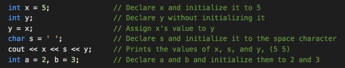
x and y still refer to different locations in memory, so modifying x later in the program will not affect y.
Note: If you use a variable that you did not initialize, its value may be garbage, which will cause unpredictable results.
Input
We use cin to get input from the user (upon hitting ENTER).
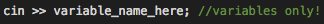When the cin statement is executed, the program will wait until the user types something and presses enter. Whatever the user types is stored in the variable name.
- If the variable is a string, it will read everything up to the first whitespace character (the rest of the input will remain in the buffer to be used for the next cin statement).
- cin can be chained just like cout (note that cin uses >> and cout uses <<).
Operators
An expression is a sequence of operators and operands (an operand can be a literal or a variable).
- An expression is evaluated one operator at a time, in order from highest to lowest precedence.
- Anything inside parentheses is evaluated before the operators surrounding the parentheses.
- Operators of the same precedence are evaluated in the direction of their associativity.
- Arithmetic operators do not modify variables. The assignment operator = changes the value of the variable on the left.
Below are some operators from highest to lowest precedence, and their associativity.
| Precendence | Operator | Description | Associativity |
|---|---|---|---|
| 1 | * , / , % | multiplication, division, modulo | left-to-right |
| 2 | + , - | addition, subtraction | left-to-right |
| 3 | = | assignment | right-to-left |
See this page for more resources.
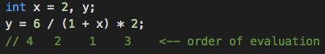- 1 + x is evaluated first because it is inside parentheses. It evaluates as 3. The value of x is not changed.
y = 6 / 3 * 2 -
6 / 3 is evaluated next because / and * have left-to-right associativity. It evaluates as 2.
y = 2 * 2 -
2 * 2 evaluates as 4.
y = 4 - A value of 4 is assigned to y.
Notes about operators:
- An arithmetic operation on two ints evaluates as an int (in integer division, the result is rounded towards 0).
-
If at least one operand is a double, it evaluates as a double.
- To avoid integer division rounding, you can use type-casting to convert from int to double (see example below).
- If x is negative, then (x % y) is equivalent to -(-x % y). Note that this is different from the math definition.
Casting
Sometimes we want to convert from one type to another. For instance convert an int to a double for a more precise result. This can be done through type casting.
Type casting is a temporary change from one type to another.
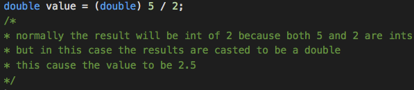